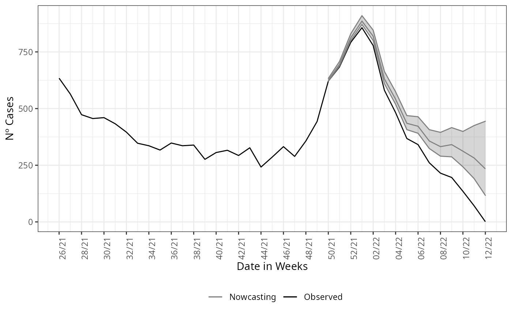
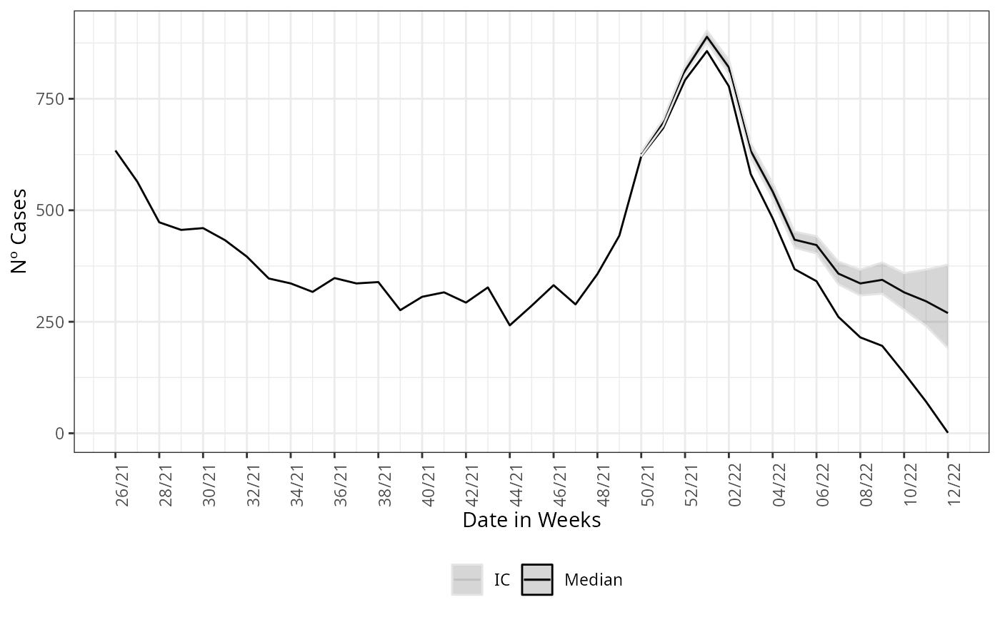

Structured data
Rafael Lopes & Leonardo Bastos
Source:vignettes/articles/structured_data.Rmd
structured_data.RmdAs in the Get Started we start by loading the package and its lazy data, by:
Non-structured data
Th Get Started example it is a non-strucutured data estimation, here we give a more detailed on the description of this type of data and how it can change the nowcasting estimation.
Now we call the nowcasting function, it has by default the parametrization to take the data and estimate with a non-structured data form. The estimate fits a negative binomial distribution, \(NegBinom(\lambda_{t,d}, \phi)\), to the cases count at time \(t\) with delay \(d\), \(\phi\) is the dispersion parameter. The rate \(\lambda_{t,d}\) is then parameterized in a log-linear format by a constant term added by structured delay random effects and structured time random effects. Hence, the model is given by the following:
\[\begin{equation} Y_{t,d} \sim NegBinom(\lambda_{t,d}, \phi), \\ \log(\lambda_{t,d}) = \alpha + \beta_t + \gamma_d, \\ t=1,2,\ldots,T, \\ d=1,2,\ldots,D, \end{equation}\]
where the intercept \(\alpha\) follows is Gaussian distribution with a very large variance, \(\beta_t\) is follows a second order random walk with precision \(\tau_\beta\), \(\gamma_d\) a first-order random walk with precision \(\tau_\gamma\). The model is then completed by INLA default prior distributions for \(\phi\), \(\tau_\beta\), and \(\tau_\gamma\). See nbinom, rw1 and rw2 INLA help pages.
The call of the function is straightforward, it simply needs a
dataset as input, here the LazyData loaded in the namespace
of the package. The function has 3 mandatory parameters,
dataset for the parsing of the dataset to be nowcasted,
date_onset for parsing the column name which is the date of
onset of symptoms and date_report which parses the column
name for the date of report of the cases. Here this columns are
“DT_SIN_PRI” and “DT_DIGITA”, respectively.
nowcasting_bh_no_age <- nowcasting_inla(dataset = sragBH,
date_onset = DT_SIN_PRI,
date_report = DT_DIGITA)
head(nowcasting_bh_no_age$total)
#> # A tibble: 6 × 7
#> Time dt_event Median LI LS LIb LSb
#> <int> <date> <dbl> <dbl> <dbl> <dbl> <dbl>
#> 1 17 2021-12-13 625 621 632 623 627
#> 2 18 2021-12-20 695 688. 707 692 698
#> 3 19 2021-12-27 812 801 829 807 818
#> 4 20 2022-01-03 886 871 908. 880 893
#> 5 21 2022-01-10 818 799 844 811 826
#> 6 22 2022-01-17 630 609 660 622 639This calling will return only the nowcasting estimate and its
Confidence Interval (CI) for two different Credible interval,
LIb and LSb are the max and min CI,
respectively, with credibility of 50% and LI and
LS are the max and min CI, respectively, with credibility
of 95%.
nowcasting_inla has the option to return the curve for
when the nowcasting estimate was set the window of action of the model,
if the data.by.week parameter is flagged as
TRUE it returns on the second element of the output list
the summarized data by week.
nowcasting_bh_no_age <- nowcasting_inla(dataset = sragBH,
date_onset = DT_SIN_PRI,
date_report = DT_DIGITA,
data.by.week = T)
head(nowcasting_bh_no_age$data)
#> # A tibble: 6 × 3
#> # Groups: date_onset [1]
#> date_onset observed Delay
#> <date> <int> <dbl>
#> 1 2019-12-23 22 6
#> 2 2019-12-23 22 1
#> 3 2019-12-23 22 2
#> 4 2019-12-23 22 3
#> 5 2019-12-23 22 53
#> 6 2019-12-23 22 3This element it is the counts of cases by the amount of delay. It is known as the delay triangle, if we table the delay amount against the data of onset of first symptoms, it can see how is the pattern of the delay for the cases.
library(dplyr)
data_triangle <- nowcasting_bh_no_age$data |>
filter(Delay < 30) |>
arrange(Delay)
delay_triangle<-table(data_triangle$date_onset,
data_triangle$Delay,
dnn = list("Date of Onset", "Delay"))
delay_triangle
#> Delay
#> Date of Onset 0 1 2 3 4 5 6 7 8 9 10 11 12 13 14 15
#> 2019-12-23 1 2 4 5 2 2 2 0 0 0 0 0 0 0 0 0
#> 2019-12-30 0 1 4 5 5 2 0 0 0 2 0 0 0 0 0 0
#> 2020-01-06 1 5 6 4 1 2 0 0 1 0 0 0 0 0 0 0
#> 2020-01-13 2 3 6 9 2 0 3 1 0 1 0 0 0 0 0 0
#> 2020-01-20 0 6 3 2 1 1 1 0 0 2 0 0 1 0 0 0
#> 2020-01-27 1 3 5 1 3 4 2 0 1 0 0 0 0 0 0 0
#> 2020-02-03 0 5 3 5 0 3 1 4 0 0 0 0 0 1 0 0
#> 2020-02-10 0 2 7 1 1 4 2 2 1 1 0 0 1 0 0 0
#> 2020-02-17 1 6 4 7 6 7 0 2 1 1 5 1 0 0 0 0
#> 2020-02-24 2 3 5 8 9 4 1 2 2 1 1 1 0 2 4 1
#> 2020-03-02 2 9 24 30 17 13 6 6 7 5 6 3 4 0 0 1
#> 2020-03-09 5 45 109 25 36 30 13 23 21 9 8 6 3 3 2 1
#> 2020-03-16 7 120 48 52 19 18 23 17 17 6 10 3 5 4 2 0
#> 2020-03-23 23 76 70 18 27 20 16 15 11 6 2 2 3 1 2 1
#> 2020-03-30 15 103 38 25 24 8 10 8 5 4 7 1 1 2 0 1
#> 2020-04-06 24 79 63 30 23 21 7 12 3 4 0 3 1 1 1 1
#> 2020-04-13 17 111 80 22 15 10 16 3 5 5 1 1 2 2 4 1
#> 2020-04-20 22 143 51 26 17 16 4 12 7 4 0 0 3 2 1 0
#> 2020-04-27 39 106 87 24 9 5 8 6 1 2 4 1 3 2 1 0
#> 2020-05-04 37 154 68 32 8 12 10 10 3 3 2 1 3 0 2 0
#> 2020-05-11 31 153 80 20 22 15 17 3 4 0 3 3 0 1 1 3
#> 2020-05-18 41 154 70 67 24 15 11 5 6 3 6 0 0 3 2 1
#> 2020-05-25 34 174 191 98 35 27 18 10 15 11 1 4 1 2 5 5
#> 2020-06-01 22 240 232 62 49 25 11 16 19 4 3 3 1 2 2 5
#> 2020-06-08 44 355 252 119 55 19 18 21 4 9 1 6 8 3 3 0
#> 2020-06-15 61 363 252 94 40 30 39 9 8 3 4 10 5 6 4 2
#> 2020-06-22 84 401 268 139 87 93 10 20 9 7 9 9 6 1 2 2
#> 2020-06-29 53 338 309 120 83 18 15 8 11 5 5 5 2 3 2 3
#> 2020-07-06 51 394 265 96 44 36 12 10 9 14 4 4 9 4 3 2
#> 2020-07-13 51 351 195 69 46 25 14 15 13 7 4 7 4 4 2 1
#> 2020-07-20 62 216 125 83 48 35 38 17 11 11 8 13 14 2 1 1
#> 2020-07-27 22 171 152 53 40 33 31 15 6 17 13 15 4 0 2 2
#> 2020-08-03 43 222 96 78 44 41 29 7 20 15 13 7 2 0 3 5
#> 2020-08-10 43 185 127 63 48 29 13 12 18 27 4 2 6 1 3 1
#> 2020-08-17 19 184 137 91 34 17 17 18 16 17 2 8 1 3 0 7
#> 2020-08-24 30 183 166 56 26 17 19 23 17 7 14 6 7 2 4 2
#> 2020-08-31 31 162 115 60 17 23 29 10 7 10 4 3 5 13 0 2
#> 2020-09-07 27 170 139 55 16 24 18 6 14 6 4 6 7 2 1 1
#> 2020-09-14 31 176 103 46 33 29 10 17 8 7 6 8 4 1 1 1
#> 2020-09-21 32 195 88 60 39 16 26 20 3 9 9 6 0 2 2 3
#> 2020-09-28 35 146 116 41 31 35 27 8 4 12 4 2 1 2 1 1
#> 2020-10-05 33 128 75 43 33 27 13 7 3 5 0 0 1 1 2 5
#> 2020-10-12 38 98 63 60 44 20 11 12 6 3 1 4 0 0 2 0
#> 2020-10-19 24 105 129 87 24 23 9 9 5 2 3 4 2 2 1 4
#> 2020-10-26 24 163 138 53 48 15 25 5 6 8 4 7 9 3 3 2
#> 2020-11-02 37 189 130 84 27 48 7 6 10 7 10 13 4 12 6 6
#> 2020-11-09 27 166 155 55 75 12 12 16 10 8 17 9 6 8 8 5
#> 2020-11-16 34 177 133 109 34 20 31 15 10 23 15 14 6 11 3 4
#> 2020-11-23 18 141 213 53 44 92 34 30 36 18 13 10 16 8 4 4
#> 2020-11-30 24 201 111 80 88 47 35 37 24 19 15 14 1 7 6 3
#> 2020-12-07 30 133 133 186 74 58 50 25 16 13 15 6 8 5 5 5
#> 2020-12-14 21 101 224 115 75 77 53 26 26 28 24 9 12 8 8 2
#> 2020-12-21 10 131 226 109 92 77 50 27 29 19 13 7 5 2 3 7
#> 2020-12-28 20 184 168 125 71 70 31 42 18 14 11 10 5 7 7 4
#> 2021-01-04 25 166 206 83 89 44 38 28 17 11 13 5 8 8 7 3
#> 2021-01-11 22 190 131 103 55 64 23 28 13 7 5 12 12 7 5 8
#> 2021-01-18 34 121 112 79 47 26 15 19 16 7 8 9 5 3 5 2
#> 2021-01-25 28 177 126 97 53 40 30 19 12 7 9 6 7 22 1 0
#> 2021-02-01 27 135 115 86 36 30 36 15 12 12 4 10 10 6 2 4
#> 2021-02-08 19 159 190 89 52 44 25 26 21 15 12 13 10 7 4 3
#> 2021-02-15 36 169 177 121 58 42 41 34 25 16 26 16 15 10 5 6
#> 2021-02-22 28 268 306 174 118 126 97 35 36 42 25 24 21 5 8 16
#> 2021-03-01 39 245 282 291 211 115 72 70 57 46 40 28 21 18 16 24
#> 2021-03-08 32 192 403 355 177 138 101 75 73 45 25 26 38 32 43 11
#> 2021-03-15 21 171 319 257 157 97 77 49 42 29 28 40 33 30 18 12
#> 2021-03-22 14 205 298 197 102 91 41 49 33 39 35 24 28 7 16 5
#> 2021-03-29 17 174 228 168 108 68 54 33 21 33 48 30 8 12 15 16
#> 2021-04-05 27 136 275 195 70 60 28 30 37 26 22 12 20 13 10 5
#> 2021-04-12 8 200 259 143 82 29 30 44 32 28 19 20 18 10 4 4
#> 2021-04-19 22 174 243 122 78 39 53 39 24 14 39 29 11 12 4 5
#> 2021-04-26 13 160 240 159 66 80 48 27 23 44 26 13 5 7 11 4
#> 2021-05-03 27 162 219 163 203 95 53 37 39 31 29 15 13 11 4 8
#> 2021-05-10 19 152 178 234 115 93 47 62 32 29 16 14 9 4 6 6
#> 2021-05-17 22 97 258 136 133 45 76 45 37 27 24 8 10 3 4 0
#> 2021-05-24 6 163 170 173 62 87 44 45 27 18 15 12 12 4 4 1
#> 2021-05-31 18 118 164 93 105 71 58 25 20 18 7 10 6 4 1 5
#> 2021-06-07 13 122 169 146 78 66 60 30 18 13 16 10 6 4 2 6
#> 2021-06-14 8 128 139 83 71 50 46 34 10 19 15 7 0 2 2 1
#> 2021-06-21 20 115 135 86 71 56 35 13 12 22 9 6 3 2 2 2
#> 2021-06-28 9 123 143 94 58 52 35 37 24 21 12 5 5 1 1 1
#> 2021-07-05 12 117 132 93 43 38 38 26 21 13 7 7 4 1 2 0
#> 2021-07-12 22 125 113 46 32 47 22 22 14 7 3 3 1 1 2 4
#> 2021-07-19 21 123 87 58 62 32 23 21 2 6 4 2 3 1 2 2
#> 2021-07-26 20 95 105 85 43 38 32 10 11 3 2 1 1 5 5 0
#> 2021-08-02 19 113 98 45 52 55 11 9 4 1 5 1 7 2 1 2
#> 2021-08-09 8 115 82 71 51 15 17 6 2 4 4 6 5 0 2 0
#> 2021-08-16 13 74 91 66 36 31 6 2 5 5 4 1 3 1 1 0
#> 2021-08-23 13 51 127 55 26 15 3 7 2 12 6 3 3 5 0 0
#> 2021-08-30 13 97 68 38 30 10 15 9 7 9 3 7 2 0 0 0
#> 2021-09-06 20 117 68 30 13 29 14 19 14 5 5 2 1 2 1 0
#> 2021-09-13 17 105 44 38 41 12 19 32 6 10 5 1 1 0 0 0
#> 2021-09-20 11 83 71 55 13 33 23 8 20 3 1 2 3 1 2 1
#> 2021-09-27 5 65 79 39 28 23 7 10 4 3 1 0 2 1 2 0
#> 2021-10-04 10 77 56 57 43 15 19 4 2 0 1 10 4 0 0 0
#> 2021-10-11 3 48 97 52 37 31 11 8 2 3 5 5 1 0 3 3
#> 2021-10-18 4 41 81 35 50 13 8 7 10 17 8 2 0 3 7 3
#> 2021-10-25 6 84 63 56 26 9 19 15 11 12 3 1 1 9 7 1
#> 2021-11-01 10 59 50 31 18 23 9 22 9 1 0 1 4 2 1 0
#> 2021-11-08 6 74 50 28 26 36 22 15 2 1 2 11 7 2 1 2
#> 2021-11-15 6 80 61 41 37 25 21 10 5 4 23 7 3 3 4 0
#> 2021-11-22 4 36 47 49 25 32 17 16 5 24 13 7 5 5 0 2
#> 2021-11-29 5 70 77 27 58 19 9 10 30 18 9 8 5 2 4 1
#> 2021-12-06 9 87 85 72 39 22 16 16 38 7 10 8 6 5 2 21
#> 2021-12-13 12 78 170 87 41 27 57 50 24 27 13 12 7 5 11 0
#> 2021-12-20 6 113 128 63 54 100 85 33 25 25 12 13 15 12 0 0
#> 2021-12-27 20 106 114 109 98 113 72 69 27 19 18 13 14 0 0 0
#> 2022-01-03 7 105 152 104 135 109 83 66 27 30 18 20 1 0 0 0
#> 2022-01-10 10 139 101 135 103 90 70 51 17 28 33 1 0 0 0 0
#> 2022-01-17 15 98 121 77 69 79 29 37 28 28 0 0 0 0 0 0
#> 2022-01-24 11 87 99 73 76 38 36 40 22 0 0 0 0 0 0 0
#> 2022-01-31 16 76 77 62 37 30 35 35 0 0 0 0 0 0 0 0
#> 2022-02-07 7 85 59 45 69 47 29 0 0 0 0 0 0 0 0 0
#> 2022-02-14 20 52 72 44 27 46 0 0 0 0 0 0 0 0 0 0
#> 2022-02-21 12 63 48 40 52 0 0 0 0 0 0 0 0 0 0 0
#> 2022-02-28 12 56 72 56 0 0 0 0 0 0 0 0 0 0 0 0
#> 2022-03-07 15 56 64 0 0 0 0 0 0 0 0 0 0 0 0 0
#> 2022-03-14 11 60 0 0 0 0 0 0 0 0 0 0 0 0 0 0
#> 2022-03-21 1 0 0 0 0 0 0 0 0 0 0 0 0 0 0 0
#> Delay
#> Date of Onset 16 17 18 19 20 21 22 23 24 25 26 27 28 29
#> 2019-12-23 0 1 2 0 0 0 0 0 0 0 0 0 0 0
#> 2019-12-30 0 0 1 0 0 0 0 0 0 0 0 0 0 0
#> 2020-01-06 0 0 0 0 0 0 0 0 0 0 0 0 0 0
#> 2020-01-13 0 0 0 0 0 0 0 0 0 0 0 0 0 0
#> 2020-01-20 0 0 0 1 0 0 0 0 0 0 0 0 0 0
#> 2020-01-27 0 0 0 0 0 0 0 0 0 0 0 0 0 0
#> 2020-02-03 0 0 0 0 1 0 0 0 0 0 0 0 0 0
#> 2020-02-10 0 0 0 0 0 0 0 0 0 0 0 0 0 0
#> 2020-02-17 0 0 0 0 0 0 0 2 0 0 0 0 0 0
#> 2020-02-24 0 0 0 1 0 0 1 0 0 0 0 0 0 0
#> 2020-03-02 1 1 0 0 0 0 0 0 0 0 0 0 0 0
#> 2020-03-09 0 1 0 0 0 2 1 1 2 0 0 0 1 0
#> 2020-03-16 1 0 1 1 2 0 0 1 0 0 0 0 0 0
#> 2020-03-23 1 0 1 1 1 0 3 1 1 0 0 0 0 0
#> 2020-03-30 1 0 0 0 0 2 0 2 0 1 0 0 0 0
#> 2020-04-06 0 1 1 1 0 0 1 0 0 0 0 0 1 0
#> 2020-04-13 0 0 0 2 2 0 1 1 1 0 0 0 1 0
#> 2020-04-20 1 0 0 0 1 0 0 1 0 0 2 1 0 1
#> 2020-04-27 1 0 1 0 0 0 0 1 1 0 1 0 1 0
#> 2020-05-04 0 1 1 0 0 1 1 1 1 0 0 0 0 0
#> 2020-05-11 2 2 2 1 1 1 4 0 0 0 1 1 2 1
#> 2020-05-18 2 2 0 2 1 4 0 0 0 1 2 2 1 0
#> 2020-05-25 4 1 1 0 1 1 0 2 0 2 0 2 2 0
#> 2020-06-01 0 4 0 1 1 2 2 0 3 1 1 1 1 0
#> 2020-06-08 1 2 2 1 1 1 2 0 1 0 1 0 0 0
#> 2020-06-15 6 1 1 1 2 1 0 0 3 0 0 0 1 2
#> 2020-06-22 2 0 2 2 0 0 1 2 0 0 0 0 0 0
#> 2020-06-29 1 1 0 1 0 1 1 0 0 0 1 0 0 0
#> 2020-07-06 1 2 2 2 1 1 0 0 0 0 0 0 0 0
#> 2020-07-13 1 2 2 1 5 0 0 1 0 1 0 1 2 2
#> 2020-07-20 1 3 3 5 1 1 0 1 0 1 0 0 2 2
#> 2020-07-27 4 4 5 2 0 0 0 0 1 0 2 0 0 2
#> 2020-08-03 1 13 1 0 0 2 0 3 2 0 2 0 3 1
#> 2020-08-10 9 3 0 1 0 0 0 1 1 2 1 3 0 0
#> 2020-08-17 1 0 1 2 1 1 1 3 0 0 2 1 0 0
#> 2020-08-24 0 0 0 0 0 1 1 5 0 3 0 0 0 2
#> 2020-08-31 0 0 1 0 0 0 0 3 2 0 1 0 1 0
#> 2020-09-07 1 1 0 0 2 0 0 1 2 0 0 0 0 0
#> 2020-09-14 2 1 1 1 2 0 2 0 0 1 3 0 1 0
#> 2020-09-21 1 4 2 4 4 6 0 0 2 1 0 1 1 0
#> 2020-09-28 2 3 5 1 1 3 0 1 0 2 0 0 0 0
#> 2020-10-05 2 2 7 2 1 0 0 1 0 0 0 0 0 0
#> 2020-10-12 5 2 4 0 0 0 0 0 1 1 1 1 0 1
#> 2020-10-19 2 1 3 0 2 0 0 0 0 0 0 0 1 0
#> 2020-10-26 10 1 3 4 0 1 0 1 1 0 0 0 0 0
#> 2020-11-02 8 5 3 1 1 0 1 1 0 1 1 0 2 1
#> 2020-11-09 6 2 3 0 0 2 2 3 2 1 2 0 0 0
#> 2020-11-16 8 5 0 0 1 3 3 2 1 0 2 0 0 3
#> 2020-11-23 7 1 3 0 3 2 4 3 2 1 1 0 0 0
#> 2020-11-30 0 0 3 2 4 4 1 2 3 1 2 1 4 2
#> 2020-12-07 3 4 2 4 4 2 0 3 0 0 0 1 1 0
#> 2020-12-14 2 4 7 2 4 0 3 0 3 1 3 1 0 2
#> 2020-12-21 3 2 5 2 2 3 1 2 0 0 2 3 0 2
#> 2020-12-28 8 6 1 1 3 2 2 3 1 0 1 0 0 0
#> 2021-01-04 8 2 0 1 0 1 1 1 0 1 0 0 1 0
#> 2021-01-11 3 1 5 0 2 1 1 2 0 1 0 0 1 0
#> 2021-01-18 0 3 1 2 3 1 0 0 0 0 0 0 0 0
#> 2021-01-25 4 1 2 2 0 0 3 0 0 1 0 1 0 1
#> 2021-02-01 2 3 6 1 1 0 1 2 0 0 0 0 0 0
#> 2021-02-08 2 6 2 2 3 1 0 0 1 2 0 1 0 0
#> 2021-02-15 4 1 4 1 1 2 0 0 0 0 2 0 0 0
#> 2021-02-22 11 7 7 1 4 2 2 2 3 1 1 1 0 0
#> 2021-03-01 9 10 4 1 1 3 3 0 0 1 0 3 1 1
#> 2021-03-08 14 13 6 1 3 6 1 4 1 2 0 0 4 0
#> 2021-03-15 12 20 7 4 3 0 0 4 1 1 1 0 1 0
#> 2021-03-22 13 4 4 4 1 6 4 1 4 1 0 1 0 0
#> 2021-03-29 12 4 4 0 1 1 2 2 0 1 1 0 0 0
#> 2021-04-05 4 3 0 4 4 0 1 2 1 0 0 0 0 1
#> 2021-04-12 7 1 2 2 0 2 1 1 1 0 0 0 2 0
#> 2021-04-19 5 9 3 1 1 0 2 1 0 1 0 2 2 0
#> 2021-04-26 8 5 4 1 1 1 1 0 1 0 0 0 1 1
#> 2021-05-03 5 4 3 1 1 1 0 1 0 1 0 2 0 0
#> 2021-05-10 5 4 4 2 1 0 1 1 2 1 2 0 1 0
#> 2021-05-17 6 7 2 2 0 0 2 0 0 0 0 0 0 0
#> 2021-05-24 5 0 3 1 0 0 1 0 0 2 0 0 0 0
#> 2021-05-31 1 4 1 0 4 1 1 2 1 0 0 0 0 0
#> 2021-06-07 1 0 6 1 0 1 0 1 1 0 0 0 0 0
#> 2021-06-14 1 3 0 2 1 2 0 0 0 1 0 0 2 0
#> 2021-06-21 0 1 1 1 6 1 0 0 0 1 0 2 0 0
#> 2021-06-28 1 1 1 4 1 0 0 0 0 0 0 0 0 0
#> 2021-07-05 4 1 1 0 1 0 0 0 0 0 0 0 0 1
#> 2021-07-12 2 3 1 0 0 0 0 0 0 0 0 0 2 0
#> 2021-07-19 2 0 0 0 0 0 2 0 1 0 1 0 0 0
#> 2021-07-26 1 1 0 0 0 0 1 0 1 0 0 0 0 0
#> 2021-08-02 0 1 0 0 0 0 0 0 0 2 0 1 1 0
#> 2021-08-09 1 1 0 0 0 2 1 2 0 0 0 0 0 1
#> 2021-08-16 1 0 1 0 0 0 1 0 2 1 0 1 1 0
#> 2021-08-23 0 0 0 0 0 2 1 1 0 0 1 0 1 2
#> 2021-08-30 0 0 0 0 0 2 0 2 0 0 2 0 2 1
#> 2021-09-06 3 0 0 0 2 0 0 0 0 2 0 0 1 0
#> 2021-09-13 0 0 0 0 2 0 0 1 1 0 0 1 0 0
#> 2021-09-20 0 0 0 4 0 0 3 1 0 0 1 0 0 0
#> 2021-09-27 0 0 0 1 0 0 0 1 4 1 0 0 0 0
#> 2021-10-04 1 1 1 1 0 0 0 0 4 0 0 0 0 0
#> 2021-10-11 2 1 0 0 0 2 1 1 0 0 0 0 0 0
#> 2021-10-18 1 0 0 0 2 0 1 0 0 0 0 0 0 0
#> 2021-10-25 1 1 1 0 0 1 0 0 0 0 0 0 0 0
#> 2021-11-01 1 0 0 0 1 0 0 0 0 0 0 0 0 0
#> 2021-11-08 0 1 0 0 0 0 0 0 0 0 0 0 0 0
#> 2021-11-15 1 1 0 0 0 0 0 0 0 0 0 0 0 0
#> 2021-11-22 1 1 0 0 0 0 0 0 0 0 0 0 0 0
#> 2021-11-29 5 0 0 0 0 0 0 0 0 0 0 0 0 0
#> 2021-12-06 0 0 0 0 0 0 0 0 0 0 0 0 0 0
#> 2021-12-13 0 0 0 0 0 0 0 0 0 0 0 0 0 0
#> 2021-12-20 0 0 0 0 0 0 0 0 0 0 0 0 0 0
#> 2021-12-27 0 0 0 0 0 0 0 0 0 0 0 0 0 0
#> 2022-01-03 0 0 0 0 0 0 0 0 0 0 0 0 0 0
#> 2022-01-10 0 0 0 0 0 0 0 0 0 0 0 0 0 0
#> 2022-01-17 0 0 0 0 0 0 0 0 0 0 0 0 0 0
#> 2022-01-24 0 0 0 0 0 0 0 0 0 0 0 0 0 0
#> 2022-01-31 0 0 0 0 0 0 0 0 0 0 0 0 0 0
#> 2022-02-07 0 0 0 0 0 0 0 0 0 0 0 0 0 0
#> 2022-02-14 0 0 0 0 0 0 0 0 0 0 0 0 0 0
#> 2022-02-21 0 0 0 0 0 0 0 0 0 0 0 0 0 0
#> 2022-02-28 0 0 0 0 0 0 0 0 0 0 0 0 0 0
#> 2022-03-07 0 0 0 0 0 0 0 0 0 0 0 0 0 0
#> 2022-03-14 0 0 0 0 0 0 0 0 0 0 0 0 0 0
#> 2022-03-21 0 0 0 0 0 0 0 0 0 0 0 0 0 0We just look at the amount of cases with 30 weeks of delay or less, it is the default maximum delay considered at nowcasting estimation.
If this element is groped by and summarized by the onset of symptoms
date, here DT_SIN_PRI, it is the epidemiological curve
observed. To example it, we plot the estimate and the epidemiological
curve all together.
library(ggplot2)
data_by_week <- nowcasting_bh_no_age$data |>
ungroup() |>
filter(date_onset >= (max(date_onset)-270))
nowcasting_bh_no_age$total |>
filter(dt_event >= (max(dt_event)-270)) |>
ggplot(aes(x = dt_event, y = Median, col = 'Nowcasting')) +
geom_line(data = data_by_week, aes(date_onset, y = observed, col = 'Observed'))+
geom_ribbon(aes(ymin = LI, ymax = LS, col = NA), alpha = 0.2, show.legend = F)+
geom_line()+
theme_bw()+
theme(legend.position = "bottom", axis.text.x = element_text(angle = 90)) +
scale_color_manual(values = c('grey50', 'black'), name = '')+
scale_x_date(date_breaks = '2 weeks', date_labels = '%V/%y', name = 'Date in Weeks')+
labs(x = '', y = 'Nº Cases')
Structured data, Age
For the structured data the nowcasting_inla() fits again
a Negative binomial distribution to the cases count at time \(t\) with delay \(d\). Differently, from the non-structured
case the model now gives random effects to the delay distribution and
and time distribution by each of the age-class chosen by the user to
break the data. The model has the form now:
\[\begin{equation}Y_{t,d,a} \sim NegBinom(\lambda_{t,d,a}, \phi), \\ \log(\lambda_{t,d,a}) = \alpha_a + \beta_{t,a} + \gamma_{d,a}, \\ \quad t=1,2,\ldots,T, \\ d=1,2,\ldots,D, \\ a=1,2,\ldots,A, \end{equation}\]
where each age class, \(a\), has an intercept \(\alpha_a\) following a Gaussian distribution with a very large variance, the time-age random effects, \(\beta_{t,a}\), follow a joint multivariate Gaussian distribution with a separable variance components an independent Gaussian term for the age classes with precision \(\tau_{age,\beta}\) and a second order random walk term for the time with precision \(\tau_{\beta}\). Analogously, the delay-age random effects, \(\gamma_{d,a}\), follow a joint multivariate Gaussian distribution with a separable variance components an independent Gaussian term for the age classes with precision \(\tau_{age,\gamma}\) and a first order random walk term for the time with precision \(\tau_{\gamma}\). The model is then completed by INLA default prior distributions for \(\phi\), \(\tau_{age,\beta}\), \(\tau_{age,\gamma}\), \(\tau_{\beta}\) and \(\tau_\gamma\). See nbinom, iid, rw1 and rw2 INLA help pages.
This new model corrects the delay taking into account the effects of
age classes and the interactions of each age class between time and also
delay. Now the model needs a flag indicating which is the column on the
dataset which will be used to break the data into age classes and how
the age classes will be split. This is given by the parameters
age_col and bins_age. We pass three additional
parameters, data.by.week to return the epidemiological
curve out of window of action of nowcasting estimate and
return.age to inform we desire a nowcasting result in two
ways, the total aggregation estimate and the age-stratified estimate.
The calling of the function has the following form:
nowcasting_bh_age <- nowcasting_inla(dataset = sragBH,
bins_age = "10 years",
data.by.week = T,
date_onset = DT_SIN_PRI,
date_report = DT_DIGITA,
age_col = Idade)Each of the estimates returned by nowcasting_inla has
the same form as in the non-structured case. On the nowcasting
estimates, it returns a data.frame with the posterior edian and 50% and
95% credible intervals, (LIb and LSb) and (LI and LS) respectively.
library(ggplot2)
dados_by_week <- nowcasting_bh_age$data |>
ungroup() |>
filter(date_onset >= (max(date_onset)-270))
nowcasting_bh_age$total |>
ggplot(aes(x = dt_event, y = Median, col = 'Median'))+
geom_line()+
geom_line(data = dados_by_week, aes(date_onset, y = observed))+
geom_ribbon(aes(ymin = LI, ymax = LS, col = 'IC'), alpha = 0.2)+
theme_bw()+
theme(legend.position = "bottom", axis.text.x = element_text(angle = 90))+
scale_color_manual(values = c('grey90', 'black'), name = '')+
scale_x_date(date_breaks = '2 weeks', date_labels = '%V/%y', name = 'Date in Weeks')+
labs(x = '', y = 'Nº Cases')